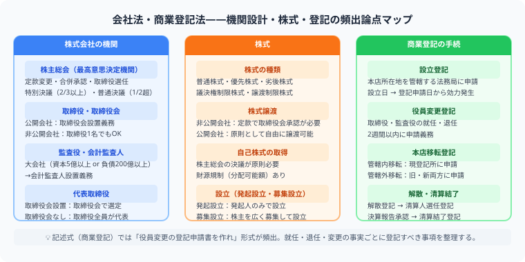

司法書士試験の会社法を完全攻略
取締役任期・株主総会決議要件を設例で解説
この記事でわかること（5秒まとめ）
- 会社法は「会社の中で何が起きたか」、商業登記法は「それをどう登記するか」
- 取締役の任期は原則2年、非公開会社は定款で最長10年まで延長可
- 特別決議は出席株主の議決権の3分の2以上の賛成が必要
- 司法書士試験の合格率は例年5%前後（令和7年度実績5.2%）
大谷 一輝 より
こんにちは、大谷です！
会社法・商業登記法は「役員変更」という具体的な場面を1つ通しで追うと、抽象的な条文がぐっと身近になります。今日は取締役の退任・選任という実際によくある場面を設例にして整理します！
また、記事の末尾のほうにある【いいねボタン】をポチッと押してもらえると、めちゃくちゃ嬉しいです！
受験生
株主総会の普通決議と特別決議、定足数と賛成数の数字がごちゃごちゃになります……。
大谷（簿記1級勉強中）
「重要な決定ほどハードルが上がる」と考えると整理しやすいです。普通決議（役員選任など）は出席株主の議決権の過半数で決まりますが、特別決議（定款変更など重い議題）は出席株主の議決権の3分の2以上が必要です。定足数（議決権の過半数を持つ株主の出席）はどちらも原則同じですが、特別決議は賛成のハードルだけ上がります。
受験生
具体的に、取締役の役員変更ってどういう流れで進むんですか？
大谷（簿記1級勉強中）
具体例で見てみましょう。非公開会社・取締役会非設置の甲山商事で、取締役Aが任期満了で退任し、新たにBが取締役に選ばれるとします。株主総会で普通決議によりBの選任を決議し、その後、代表取締役の選定方法（定款の定め・株主総会決議・取締役の互選のいずれか）を経て、法務局に役員変更登記を申請します。この一連の流れを1回イメージできれば、条文の使い方が体感でわかるようになりますよ。
❓ 会社法と商業登記法の関係
会社法は「会社の中で何が起きたか」、商業登記法は「その変更をどう登記するか」です。記述式では役員変更の登記申請書作成が頻出なので、会社法の決議要件と商業登記の申請手続きをセットで理解しましょう。

| 論点 | 見るポイント |
|---|---|
| 株式会社の設立 | 発起設立、募集設立、定款、出資 |
| 株式 | 株式の譲渡、種類株式、募集株式の発行 |
| 機関設計 | 取締役、取締役会、監査役、会計参与など |
| 役員変更 | 選任、退任、任期、代表取締役 |
| 組織再編 | 合併、会社分割、株式交換など |
📝 設例で見る：役員変更と決議要件
設例
非公開会社・取締役会非設置の株式会社甲山商事で、取締役Aが任期満了により退任し、新たに取締役Bを選任する株主総会を開催した。
①取締役Bの選任（普通決議）
定足数：議決権の過半数を有する株主の出席
賛成：出席株主の議決権の過半数
定足数：議決権の過半数を有する株主の出席
賛成：出席株主の議決権の過半数
②代表取締役の選定
甲山商事は取締役会非設置なので、定款の定め・株主総会決議・取締役の互選のいずれかの方法で選定する
甲山商事は取締役会非設置なので、定款の定め・株主総会決議・取締役の互選のいずれかの方法で選定する
③商業登記（役員変更登記）
Aの退任・Bの就任を法務局に申請。添付書面として株主総会議事録、就任承諾書等が必要
Aの退任・Bの就任を法務局に申請。添付書面として株主総会議事録、就任承諾書等が必要
| 決議の種類 | 定足数 | 賛成数 | 主な議題 |
|---|---|---|---|
| 普通決議（309条1項） | 議決権の過半数出席 | 出席株主の議決権の過半数 | 役員の選任・解任など |
| 特別決議（309条2項） | 議決権の過半数出席（定款で3分の1まで軽減可） | 出席株主の議決権の3分の2以上 | 定款変更、合併など |
取締役の任期：会社法332条1項により原則2年ですが、非公開会社は定款により最長10年まで延長できます（同条2項）。「2年（定款で10年まで延長可）」とセットで覚えましょう。
🔍 商業登記法は「変更が起きたら登記」
会社の商号、本店、目的、役員、資本金などに変更があれば、商業登記の問題になります。司法書士試験では、登記すべき事項、添付書面、登録免許税、申請期間が問われます。
学習のコツ：会社法と商業登記法を別々に覚えると苦しくなります。会社法で「有効な決議か」を見て、商業登記法で「何を申請するか」を確認しましょう。
📋 まとめ：会社法・商業登記法 早見表
取締役の任期原則2年、非公開会社は定款で10年まで延長可
普通決議出席株主の議決権の過半数で成立
特別決議出席株主の議決権の3分の2以上で成立
代表取締役の選定取締役会設置＝取締役会決議／非設置＝定款・総会・互選